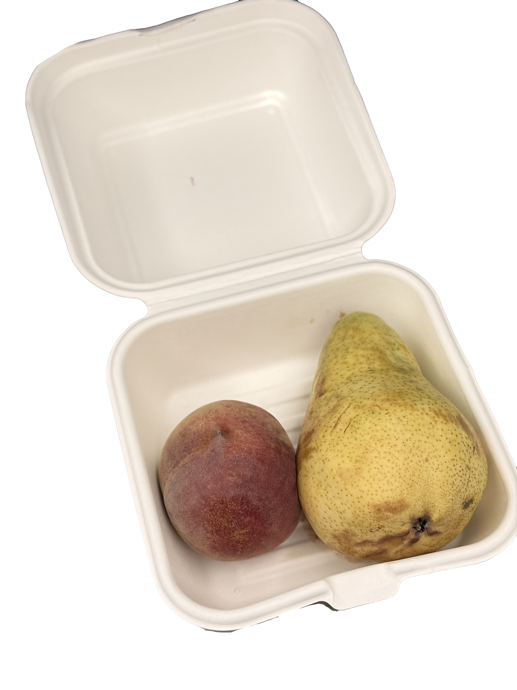

The familiar flavors of childhood

Before I got on the plane to Los Angeles, my mom gave me this box filled with my favorite fruits. She told me to eat them on the plane. As I ate the fruits, I started to remember all the times when I was little and my mom prepared fruits for me.
Home is sometimes just a familiar taste away.